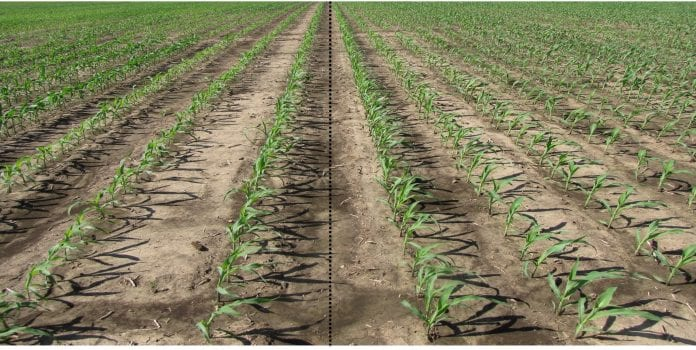

There are two main methods of planting :-
- Broadcasting.
- Row planting.
Broadcasting.
This method involves scattering the seeds all over the field in a random manner. It is commonly adapted for light tiny seeds such as those of pasture grasses. It is easier, quicker
and cheaper than row planting. However, it uses more seeds than row planting and the seeds are spread unevenly leading to crowding of plants in some places. This results in poor
performance due to competition. Broadcasting gives a good ground cover, but weeding cannot be mechanized. For good results, the seedbed should be weed-free, firm and have a fine tilth.

Row planting.
The seeds or other planting materials are placed in holes, drills or furrows in rows. The
distance between one row to the other and from one hole to the other is known. In Kenya,
both large and small – scale farmers practice row planting. It is practiced when planting
many types of crops, especially perennial, annual and root crops.

Advantages of row planting.
- Machines can be used easily between the rows.
- It is easy to establish the correct plant population.
- Lower seed rate is used than if broadcasting is adopted.
- It is easy to carry out cultural practices such as weeding, spraying and harvesting.
Disadvantages of row planting.
- It does not provide an ample foliage cover. Thus the soil is liable to being eroded by
wind and water. - It is more expensive than broadcasting because of consuming a lot of labour and time.
- It requires some skill in measuring the distances between and within the rows.
Seeds can also be planted by dibbling where the planting holes are dug by use of pangas or jembe, or by a dibbling stick (dibbler). Most of the dibbling is done randomly although rows
can also be used when using a planting line. Random dibbling is not popular in commercial farming due to low levels of production. It is only common among conservative farmers in planting of legumes such as beans, pigeon peas and cow peas.